照片来自 Wikimedia Commons。每张照片保留原作者和原许可；本地副本缩放至宽1280像素，页面缩略图可能按容器裁切。涉及 CC BY-SA 的改动沿用该照片的相同许可。照片不属于 AI 生成内容。
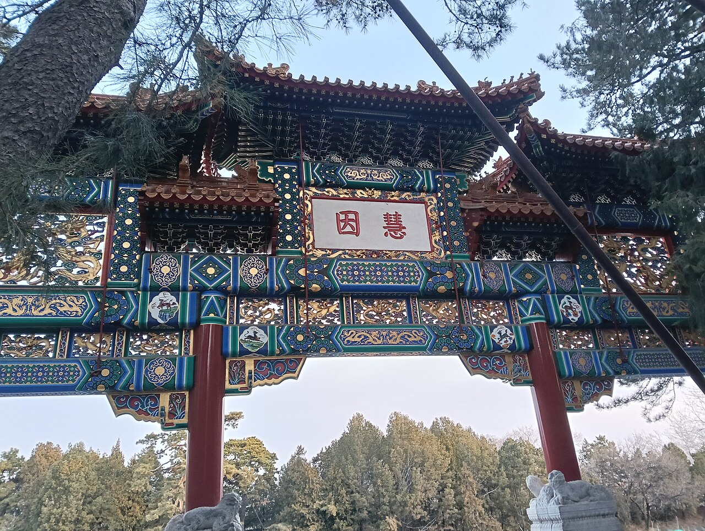
File:The South Side of Cifu Memorial Archway, North Palace Gate, Summer Palace, Haidian District, Beijing (202602230711).jpg
作者：MiiCii
许可：CC BY-SA 4.0
原作、作者和完整授权说明
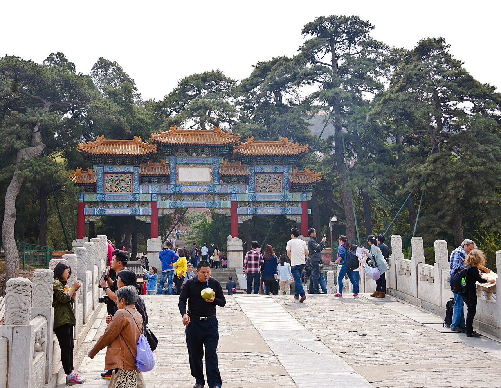
File:View along moon bridge over Suzhou Street, Summer Palace, Beijing.jpg
作者：Daniel Case
许可：CC BY-SA 3.0
原作、作者和完整授权说明
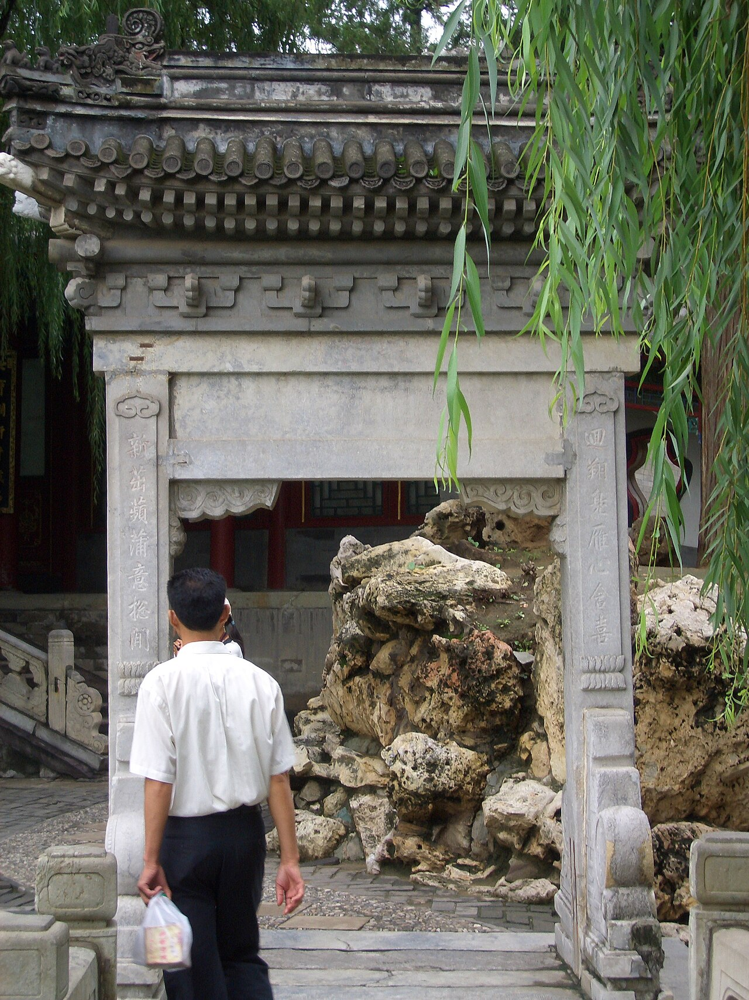
File:Poem gate in Garden of Harmonious Interest (34769274).jpg
作者：Jennifer
许可：CC BY-SA 2.0
原作、作者和完整授权说明
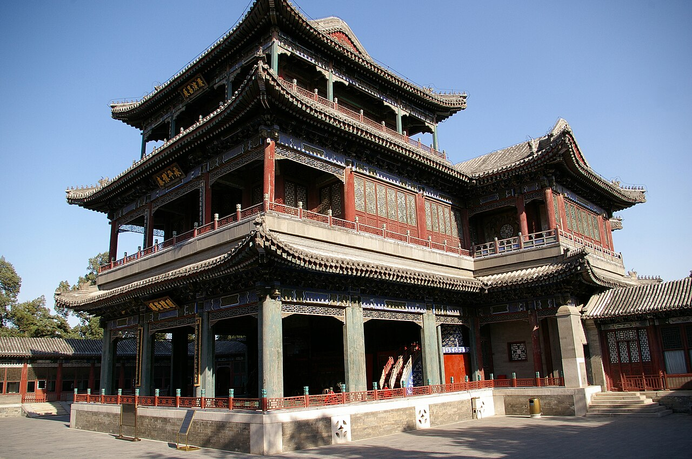
File:20090530 Beijing Summer Palace 8617.jpg
作者：Jakub Hałun
许可：CC BY-SA 3.0
原作、作者和完整授权说明
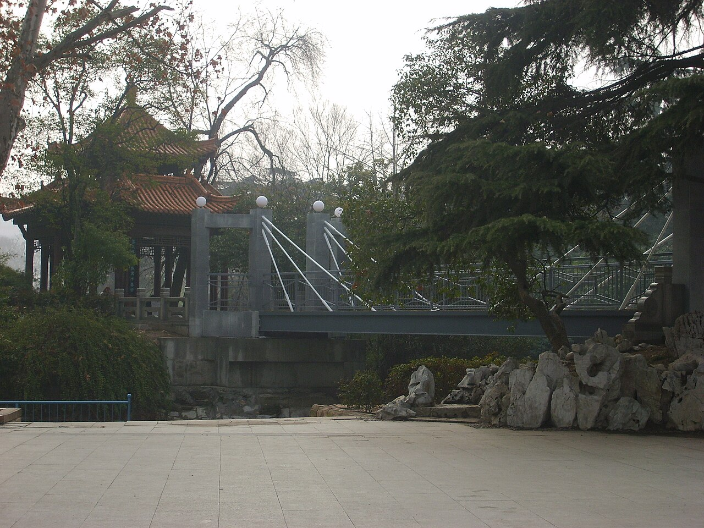
File:知春亭前的铁索桥更新换代了 - panoramio.jpg
作者：fllee
许可：CC BY-SA 3.0
原作、作者和完整授权说明
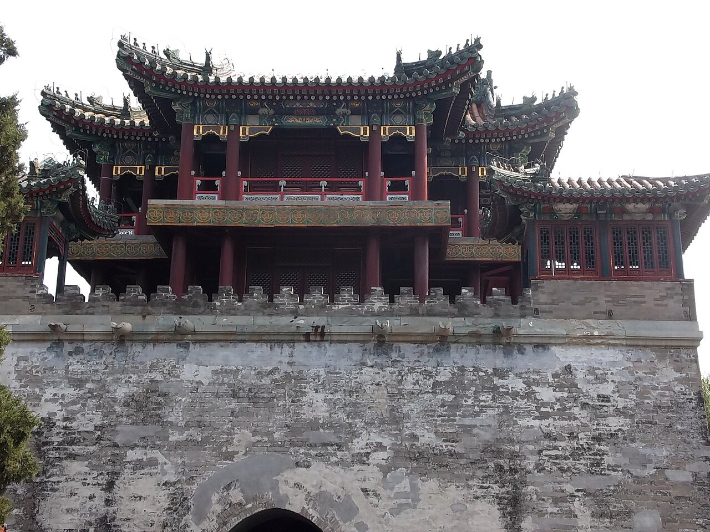
File:2014.08.27.142230 Wenchang Ge (Wenchang Tower) Summer Palace Beijing.jpg
作者：Hermann Luyken
许可：CC0
原作、作者和完整授权说明
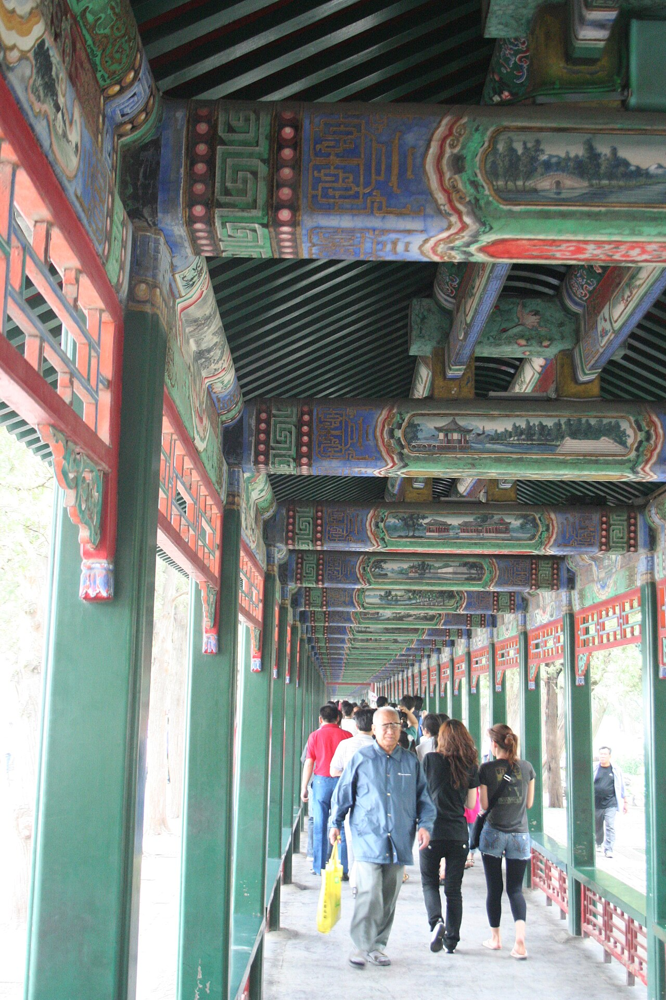
File:The Long Corridor, The Summer Palace (3640614137).jpg
作者：Robin Zebrowski
许可：CC BY 2.0
原作、作者和完整授权说明
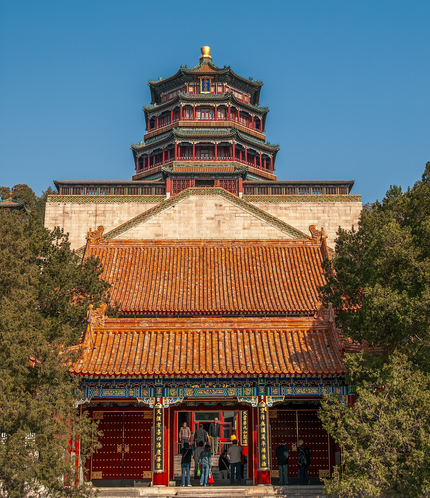
File:Peking Sommerpalast Second Palace Gate, Hall of Dispelling Clouds-20071020-RM-095612.jpg
作者：Reinhold Möller Ermell
许可：CC BY-SA 4.0
原作、作者和完整授权说明
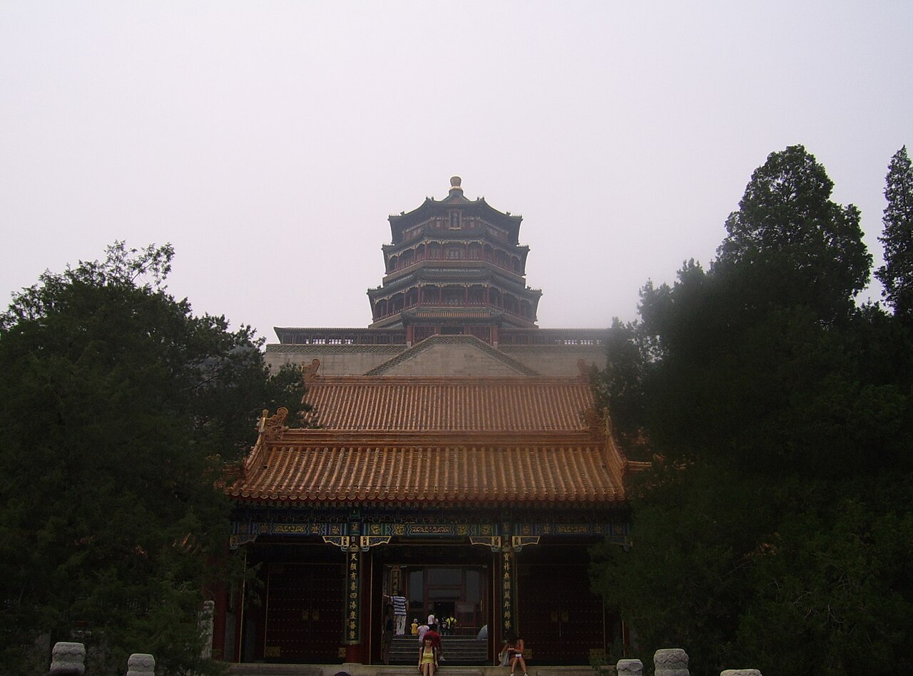
File:Tower of Buddhist Incense Summer Palace Beijing.jpg
作者：Radosław Botev
许可：CC BY 3.0 pl
原作、作者和完整授权说明
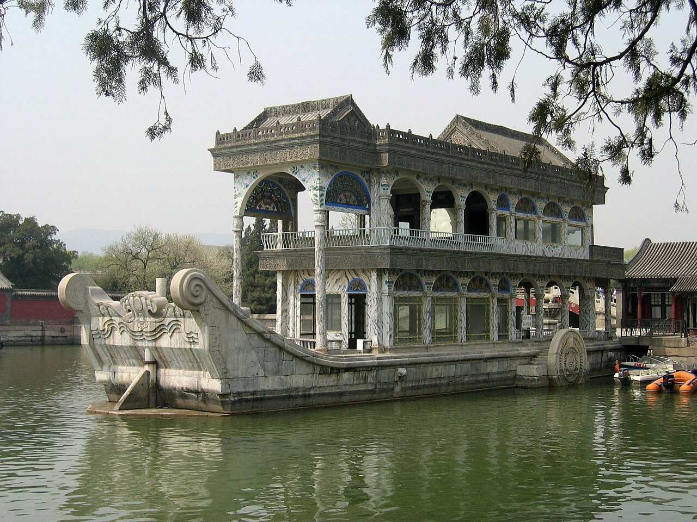
File:Marbleboot.jpg
作者：Rolf Müller (User:Rolfmueller)
许可：CC BY-SA 3.0
原作、作者和完整授权说明
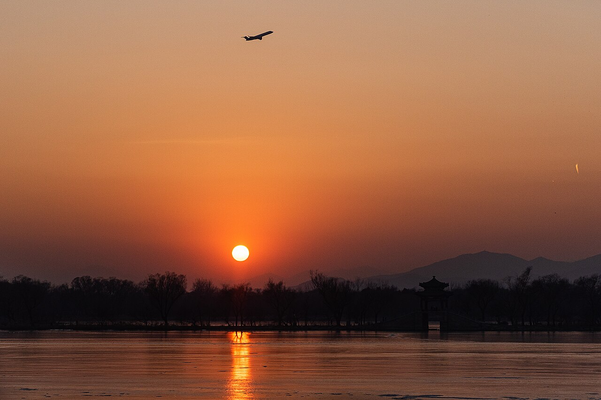
File:Sunset at West Causeway, Summer Palace (20201222163837).jpg
作者：N509FZ
许可：CC BY-SA 4.0
原作、作者和完整授权说明
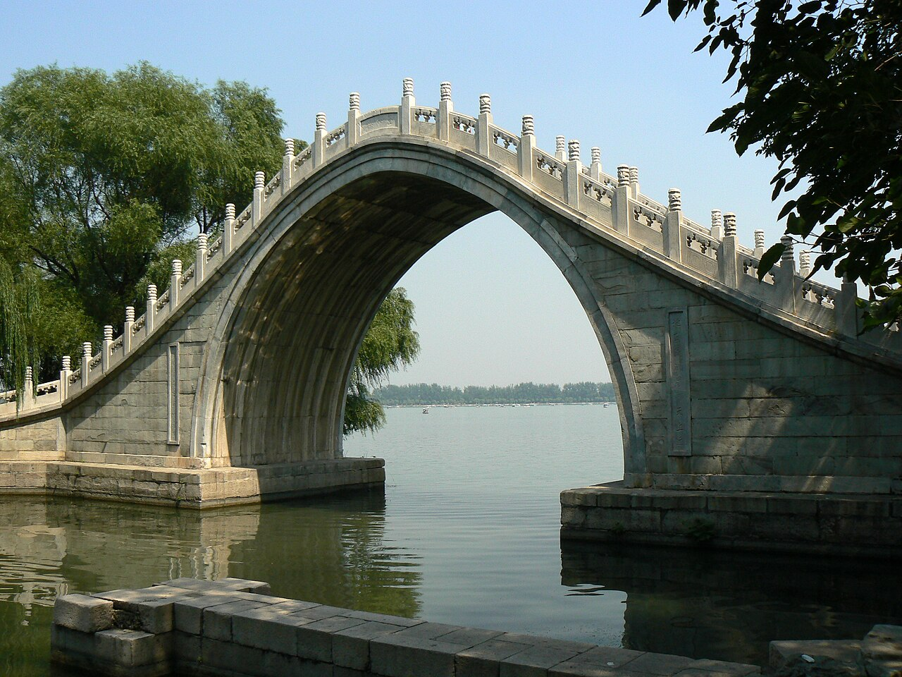
File:Jade belt bridge - Summer Palace, Beijing.jpg
作者：Will Clayton from Blackburn, UK
许可：CC BY 2.0
原作、作者和完整授权说明
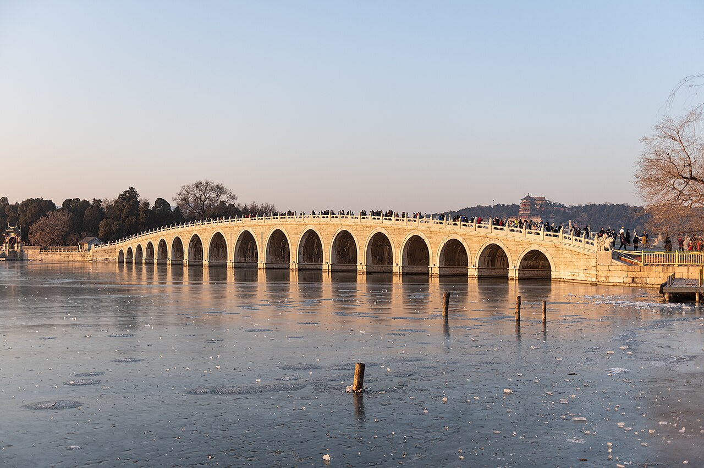
File:Seventeen Arch Bridge (20201221160537).jpg
作者：N509FZ
许可：CC BY-SA 4.0
原作、作者和完整授权说明
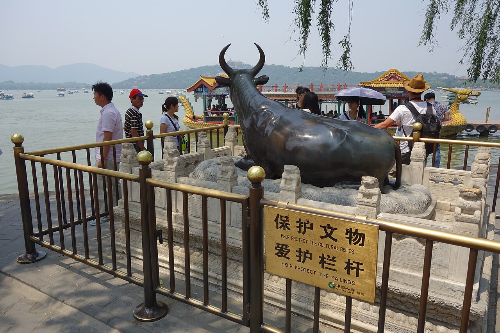
File:Bronze Ox, Summer Palace, Beijing (24569731336).jpg
作者：Yun Huang Yong from Harbord, Australia
许可：CC BY 2.0
原作、作者和完整授权说明
地图地理数据：© OpenStreetMap contributors，ODbL 1.0。
.jpg){kind=link}

.jpg){kind=link}


_Summer_Palace_Beijing.jpg){kind=link}
.jpg){kind=link}


.jpg){kind=link}

.jpg){kind=link}
.jpg){kind=link}